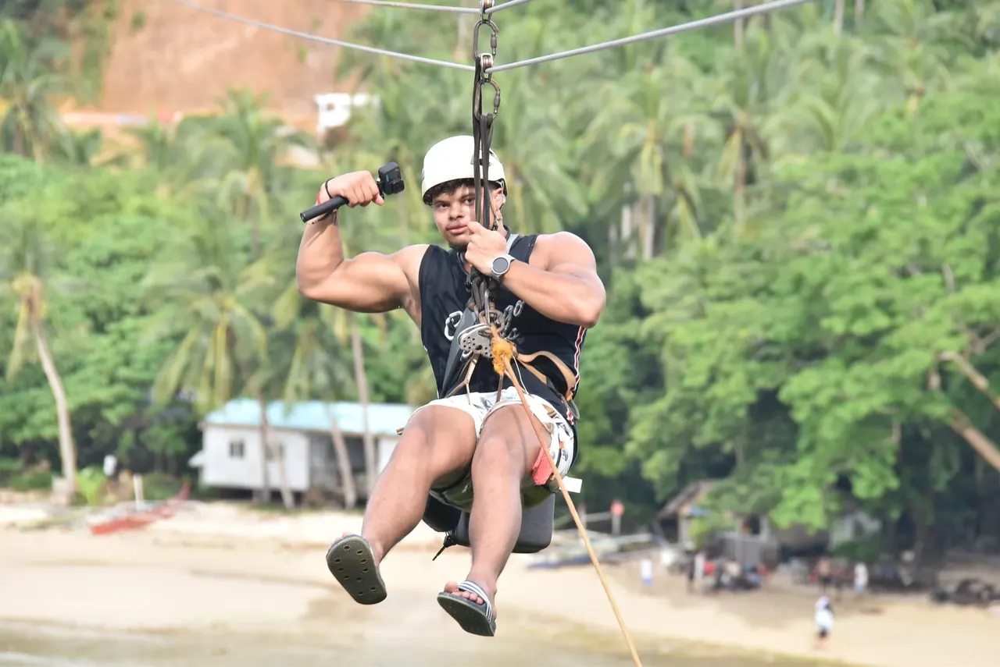

Culture with respect
I want to experience local life on its own terms: listen first, try the food and learn what makes a place tick.
Personal stories, curiosity and a camera on the road.
My friends and family have always known me as the one ready for the next trip. DainyelOnTheMove simply gave that feeling a name. What keeps me travelling is not a checklist of places, but the people, cultures and perspectives I find along the way.
At 18, I went to Barcelona with someone who quickly became one of my closest friends. That first shared adventure made travel feel like more than a holiday—and started an appetite for seeing much more of the world.
Since then, I’ve looked for the contrasts that make a place feel real: a local meal, a new culture, a good night out, then an early start for a hike, a beach or somewhere I did not expect to find.
Travel is not a scorecard. It is the perspective you bring home, and the respect you show while you are away.
There is more to DainyelOnTheMove than a destination list. Open a card for the things that shape how I see a place.
I am social, adventurous and happiest when I can see a culture through the eyes of the people who live there. Showing respect for local norms matters as much as finding the good views.
Working as an assistant manager taught me to read people, bring humour to a moment and make room for everyone. I carry that curiosity into every conversation on the road.
My camera, travel tech and a bag full of practical things always come with me. Friends gave me the nickname “gadget-man”; it is how I make sure a moment does not disappear when the trip ends.
Ask about a destination, travelling while studying, video-making or life on the move. I read every question before I answer it.
I want to experience local life on its own terms: listen first, try the food and learn what makes a place tick.
I plan the essentials, then decide plenty on location. The unplanned conversation, side street or local tip is often the story I remember.
I am a real animal lover. Nature, wildlife, hiking, snorkelling and diving are where I slow down and feel most present.
Fitness keeps my mind clear wherever I am. A gym session, bike ride or hike is part of my routine, whether I am home or far away.
I like enough structure to make the most of a day, with enough freedom for it to become something else entirely.
Breakfast early, explore or take it slow, a drink somewhere new, then dinner and a night out. I like a travel day with a little bit of everything.
Hostels are not always the easiest choice, but they bring people together. The shared stories often matter more to me than an extra hour of sleep.
“No importa el camino, lo importante es seguir caminando.”
The path does not matter; what matters is that you keep walking.From an adrenaline rush above the coast to a quiet moment beside an elephant, every trip has more than one kind of story.

Ziplining is one of the ways I like to get outside my routine and see a place from a completely different angle.

I try to visit an animal park or zoo when I travel. Moments like this one remind me to slow down and take in what’s around me.
From my first trip to Barcelona to longer stays in Southeast Asia, these are some of the places that have shaped my view of the world.
Open the interactive travel map →In Bangkok, I received a sacred Sak Yant tattoo from Arjan Neng. The moving image above captures part of that experience—a story that means something personal to me.
A practical setup that lets me capture the moments, sounds and perspectives I want to bring home.
I travel with a backpack and an extra bag. Everything below comes along to help me record, edit and share the journey as it happens.
DJI Mini 3 and DJI Neo 2 for perspectives that begin above the road.
My action camera for the wet, fast and unpredictable parts of a trip.
The gimbal I use to keep walking shots and moving scenes steady.
A compact microphone setup for cleaner voices and moments from the road.
Always close by for photos, quick clips, navigation and sharing the journey as it happens.
The practical extras I use to back up footage, edit on the road and keep the setup working.
This is the kit I’m taking into the next chapter. As I learn what works best on the road, I’ll update this page.
Enjoy the travel stories, films and little moments from the road? A small contribution helps me keep sharing the journey.
Always optional. Always appreciated. Thank you for being part of it.
A coffee, a kind gesture, a little encouragement for the road ahead.
Contributions via iDEAL | Wero open on .
Choose your amount on WhyDonate. Pay with iDEAL | Wero.
A personal contribution to my travels and the stories I share. Thank you for your support.